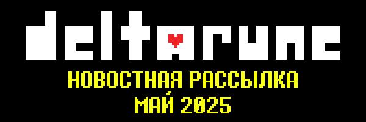
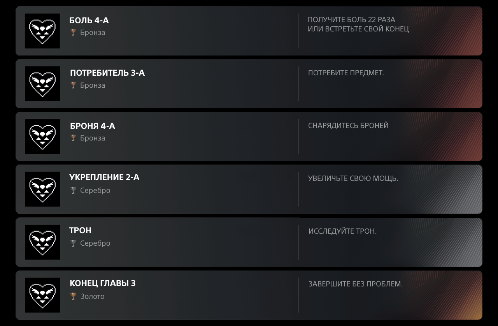

Вернуться в АрхивГлавы 1-4 DELTARUNE выйдут...
Подождите! Дайте объяснить!
Для начала, версия ДЕЛЬТАРУНА для Нинтэндо Свич 2 будет выпущена в полночь 5-го июня по местному времени в каждом соответствующем регионе. Технически, это означает, что люди в Японии получат версию Switch 2 на 13 часов раньше, чем люди на Восточном побережье Соединенных Штатов. Предполагая, что они смогут получить Switch 2 при запуске.
Однако, что это означает для всех остальных платформ? Мы решили выбрать время в качестве официального времени запуска для всего остального (Steam, Switch, PS4, and PS5). И это время...
5-ое ИЮНЯ 00:00 по японскому времени!
Что означает, если вы, к примеру, находитесь в Европе , то игра выйдет на Steam, Switch, PS4 и PS5...
- 4-го ИЮНЯ, 6 вечера (Киев/МСК)
- 4-го ИЮНЯ, 8 вечера (Британия)
- 4-го ИЮНЯ, 10 вечера (Гренландия)
(Если вы находитесь в Новой Зеландии или Австралии и приобретаете версию ДЕЛЬТАРУН для Switch 2, вы сможете получить игру на пару часов раньше, если вы получите свой Switch 2 ровно в полночь. Но, ради удобства, мы просто проигнорируем вас, ребята, и сделаем вид, что игра еще не вышла... Между тем, ничего не говорите об этом, пожалуйста.)
В любом случае, вывод заключается в том, что если вы читаете это на английском языке, есть большая вероятность, что вы действительно сможете получить игру 4-го июня!
Но погодите, есть еще хорошие новости!!
Эй, хочешь хорошую сделку!?
Благодаря Cross-Buy, покупая DELTARUNE в PlayStation Store, вы получаете обе версии для PS4 и PS5 по одной цене!
И...
Мы собираемся сделать (по сути) то же самое на платформах Nintendo! Если вы покупаете игру на Nintendo Switch и решаете, что хотите версию Switch 2 позже, вы можете получить ее без каких-либо дополнительных затрат!* И наоборот! (За исключением Японии, где местные законы требуют от нас взимать небольшую плату.) Да да! За одну цену вы сможете получить обе версии игры – это означает обе версии специальной комнаты! Ми-йоу, мой Страх Упустить Интересное рассеивается!!!
* Чтобы получить вторую версию без каких-либо дополнительных затрат, вам необходимо приобрести их обе, используя одну и ту же учетную запись Nintendo.

Эй, хватит разговоров о ценах. Самое время показать вам некоторые трофеи для Плейстейшн!!

(Это лишь малая часть всех доступных трофеев.)
Смотря на эти трофеи - становится очевидно, что они зададут непростую задачку. Трофеи остаются вашими навсегда, это значит что каждый полученный вами трофей является вечным показателем вашего успеха...
Согласно тому, как все устроено, вы получите трофей только после того, как закончится текущая "комната", в которой вы его разблокировали. Вы не получите его, если выключите игру до выхода из комнаты. Так что будьте осторожны при прохождении всех глав. При некоторых условиях можно случайно упустить трофей по завершению ГЛАВЫ. Но я не думаю, что рядовой игрок столкнется с этими условиями…
Но, честно говоря, мне кажется вам лучше насладиться игрой, не задумываясь о трофеях…
Кстати, это не относится к основной теме, но помните я говорил, что существует альтернативная концовка к лотерее спамтона?
Ну, я вот вспомнил наконец то.
Мы обновили сайт лотереи, на нем появилась альтернативная концовка!
После того как вы глянете, думаю может быть хорошей идеей взглянуть на остальную часть сайта, вспомнить старые добрые. "Каноном" я считаю только то, что есть в игре, так что там нет ничего критически важного... но просмотреть сам сайт может быть довольно весело!
Перед выпуском игры, мы будем чаще делать посты в социальных сетях! Если вы не пользуетесь социальными сетями - моё увожение - но постить я все равно буду.
Вот социальные сети...
Увидимся в июне!
Вернуться в Архив